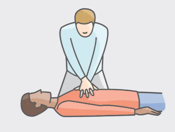
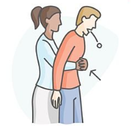

Aprende de primeros auxilios
Podrias convertirte en el heroe de alguien
MANIOBRA DE HEIMLICH
La maniobra de heimlich se utiliza en casos de atragantamiento o ahogamiento en personas

Para realizar la maniobra de Heimlich en un adulto consciente, colócate detrás de la persona, rodea su cintura con los brazos, coloca un puño justo por encima de su ombligo, sujétalo con la otra mano y empuja con fuerza y rapidez hacia adentro y arriba en un movimiento de “J”, repitiendo hasta que el objeto salga o la persona pierda el conocimiento.
REANIMACION CARDIO PULMONAR
El RCP se usan para evaluar y mantener la función cardíaca y respiratoria en emergencias.

Para dar RCP, primero verifica que la persona no responda y que no respire; llama a emergencias, coloca las manos en el centro del pecho y presiona fuerte y rápido (100-120 compresiones por minuto), alternando con 2 respiraciones boca a boca si sabes cómo hacerlo, hasta que llegue ayuda o la persona recupere el pulso.